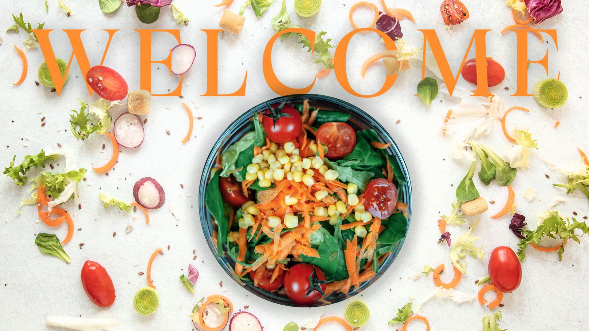

Embark on a gastronomic journey through the heart of Athens with Athenian Nectar, your compass to the city’s vibrant food and drink scene. Beyond the iconic Acropolis, our blog is a curated exploration, revealing hidden gems, local favorites, and the diverse flavors that define Athens.
Discover Beyond the Acropolis: Delve into the lesser-known neighborhoods, where each corner is a portal to a culinary treasure. Beyond the tourist hubs, we guide you to intimate eateries, bustling markets, and charming cafes, offering an authentic taste of Athens’ gastronomic soul.
From Local Insights to Global Tastes: Athenian Nectar is more than a food blog; it’s a dynamic intersection of local insights and global tastes. Whether you’re an Athenian local seeking new adventures or a global gastronome eager to explore, our recommendations cater to all palates.
Engage with our Culinary Community: Join a vibrant community of fellow food enthusiasts, locals, and travelers. Share your experiences, glean insights, and connect with like-minded individuals passionate about savoring every culinary nuance Athens has to offer.
Sip, Savor, Celebrate: Athenian Nectar is your invitation to sip, savor, and celebrate the rich tapestry of flavors that define Athens. Whether you’re a seasoned foodie or a curious explorer, our blog invites you to indulge in the joy of discovery and the pleasure of shared culinary moments.
Join Us in Raising a Glass: As we navigate the labyrinth of tastes that Athens offers, join us in raising a glass to the diverse and ever-evolving culinary landscape. Athenian Nectar is not just a blog; it’s a celebration of the art, culture, and joy found in every bite and sip in this remarkable city.
Cheers to a gastronomic adventure that goes beyond the expected, guided by Athenian Nectar – where every post is a passport to Athens’ culinary wonders!
Discover Athens through the eyes and taste buds of our vibrant community. These testimonials are more than words; they are the genuine reflections of those who have savored the culinary magic of Athenian Nectar. Join us in celebrating the diverse, the delectable, and the downright delightful. Here’s a glimpse into what our community has shared:
The vivid descriptions, mouth-watering photos, and insightful recommendations have elevated my dining experiences. From hidden gems to well-known favorites, Athenian Nectar is the ultimate foodie companion!
Athenian Nectar is my virtual tour guide through Athens’ culinary wonders. The diverse recommendations and insightful reviews have turned my visits into flavorful adventures.
The fusion of modern insights and traditional recommendations makes it a dynamic read for both locals and visitors. It's the perfect blend of contemporary flair and timeless flavors.
Athenian Nectar has completely transformed the way I explore the city. Every recommendation feels thoughtfully curated, and I’ve discovered incredible tavernas and cocktail bars I would have otherwise missed. It’s my go-to guide whenever I’m in the heart of Athens.
As someone who travels often, I rely on trusted local guides — and Athenian Nectar stands out. It highlights the authentic character of Athens while showcasing its evolving gastronomic scene. A must-read before making any reservation!
I was searching for places to eat as a local in Athens, and this was exactly what I needed. The list took me all over the city, and I got to enjoy so many new flavors and experiences that have now piqued my curiosity and sparked a desire to try even more.